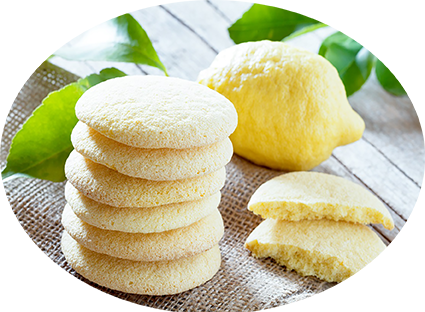

Sablés au citron

Pour 6 personnes
Préparation : 15 mn
Cuisson : 10 mn
Ingrédients
- 250 g de farine
- 100 g de sucre
- 2 citrons bioli
- 1 pincée de sel
- 125 g de beurre
- 2 œufs
- 1 sachet de levure
Recette
- Faites fondre le beurre doucement dans une casserole ou au four à micro-ondes.li>
- Dans un saladier, versez la farine tamisée, ajoutez la levure, le sel et le sucre et mélangez.
- Faites un puits dans le saladier de farine.
- Ajoutez 1 œuf, plus un jaune au centre, mélangez.
- Ajoutez le beurre et mélangez de nouveau.
- Lavez vos citrons et zestez-les. Ajoutez les zestes à la pâte.
- Formez une boule puis enveloppez-la de film et réservez au frais 30 minutes.li>
- Étalez votre pâte refroidie sur un plan de travail fariné.
- Disposez les biscuits sur une plaque recouverte de papier sulfurisé.
- Enfournez dans un four préchauffé à 180°C entre 10 et 12 minutes.
- Laissez reposer sur une grille environ 15 minutes à la sortie du four pour laisser l'humidité s'évaporer.
|